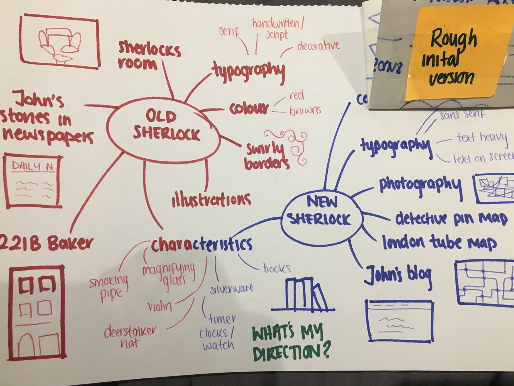
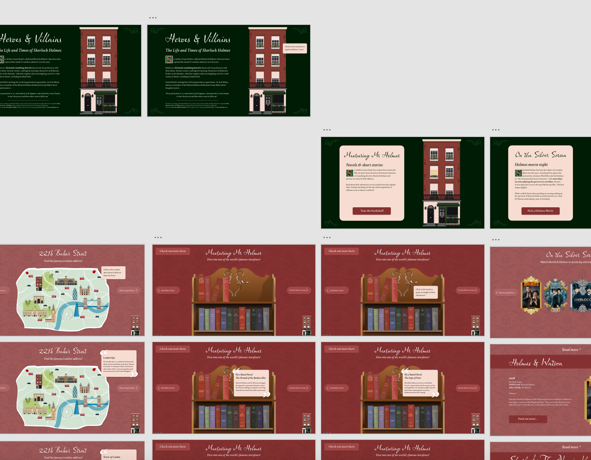
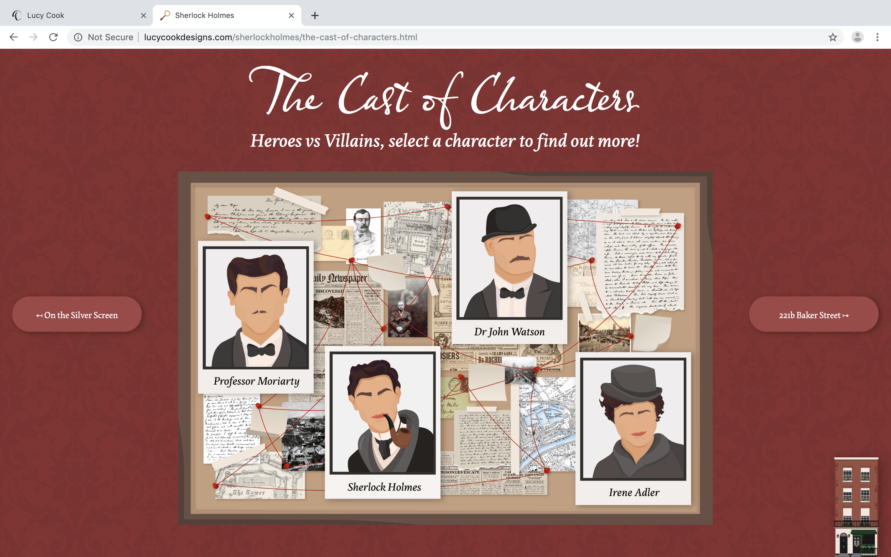

Heroes & Villains
Building an interactive website to tell the famous and adventurous story of Sherlock Holmes.
View Website

Sherlock Holmes Museum


View the prototype

Visit the Website
Research Notes
